C program stucture
pre-processor directives
global declarations
main()
{
local variable deceleration
statement sequences
function invoking
}
C Keywords
| auto |
double |
int |
struct |
| break |
else |
long |
switch |
| case |
enum |
register |
typedef |
| char |
extern |
return |
union |
| const |
float |
short |
unsigned |
| continue |
for |
signed |
void |
| default |
goto |
sizeof |
volatile |
| do |
if |
static |
while |
C Character Set
A character denotes any alphabet, digit or special symbol used to represent
information. Following are the valid alphabets, numbers and special symbols
allowed in C.
Alphabets - A, B, ….., Y, Z a, b, ……, y, z
Digits - 0, 1, 2, 3, 4, 5, 6, 7, 8, 9
Special symbols - ~ ' ! @ # % ^ & * ( ) _ - + = | \ { }
[ ] : ; " ' < > , . ? /
Rules for Writing, Compiling and Executing the C program
C is case sensitive means variable named "COUNTER" is different from a
variable named "counter".
All keywords are lowercased.
Keywords cannot be used for any other purpose (like variable names).
Every C statement must end with a ;. Thus ;acts as a statement terminator.
First character must be an alphabet or underscore, no special symbol other
than an underscore, no commas or blank spaces are allowed with in a variable,
constant or keyword.
Blank spaces may be inserted between two words to improve the readability of
the statement. However, no blank spaces are allowed within a variable, constant
or keyword.
Variable must be declared before it is used in the program.
File should be have the extension .c
Program need to be compiled before execution.
Data types and Placeholders
C has 5 basic built-in data types.
Data type defines a set of values that a variable can store along with a set of
operations that can be performed on it.
A variable takes different values at different times.
General form for declaring a variable is:
type name;
#include<stdio.h>
main()
{
int sum;
sum=12;
sum=sum+5;
printf("Sum is %d",sum);
}
printf function will print the following:
Sum is 17
In fact %d is the placeholder for integer variable value that its name comes
after double quotes.
Common data types are:
int - integer
char - character
long - long integer
float - float number
double - long float
| Placeholders |
Format |
| %c |
Character |
| %d |
Signed decimal integer |
| %i |
Signed decimal integer |
| %e |
Scientific notation[e] |
| %E |
Scientific notation[E] |
| %f |
Decimal floating point |
| %o |
unsigned octal |
| %s |
String of characters |
| %u |
unsigned decimal integer |
| %x |
unsigned Hexadecimal (lower) |
| %X |
unsigned Hexadecimal (upper) |
| %p |
display a pointer |
| %% |
print a % |
Escape sequences
| \a |
Bell |
| \n |
New line |
| \r |
Carriage return |
| \b |
Backspace |
| \f |
Formfeed |
| \t |
Horizontal tab |
| \" |
Quotation mark |
| \v |
Vertical tab |
| \' |
Apostophe |
| \\ |
Backslash |
| \? |
Question mark |
| \0 |
null |
Input
scanf function used to receiving input from keyboard.
General form of scanf function is :
scanf("Format string",&variable,&variable,...);
example:
float a;
int n;
scanf("%d%f",&n,&a);
Point to Note
While entering the string using scanf() we must be cautious about
two things:
The length of the string should not exceed the dimension of the character array.
This is because the C compiler doesn't perform bounds checking on character arrays.
scanf() is not capable of receiving multi-word strings. Therefore names such as
"Vineet Choudhary" would be unacceptable. The way to get around this limitation
is by using the function gets().The usage of functions gets() and its counter
part puts() is shown below.
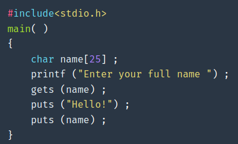
Expression & Operators Precedence
Following table summarizes the rules for precedence and associativity of all
operators, including those that we have not yet discussed. Operators on the
same line have the same precedence; rows are in order of decreasing precedence,
so, for example, *, /, and % all have the same precedence, which is higher than
that of binary + and -. The ``operator'' () refers to function call.
The operators -> and . are used to access members of structures;
| Description |
Operators |
Associativity |
| Function Expression |
() |
Left to Right |
| Array Expression |
[] |
Left to Right |
| Structure Operator |
-> |
Left to Right |
| Structure Operator |
. |
Left to Right |
| Unary minus |
- |
Right to Left |
| Increment/Decrement |
++, -- |
Right to Left |
| One's compliment |
~ |
Right to Left |
| Negation |
! |
Right to Left |
| Address of |
& |
Right to Left |
| Value of address |
`*` |
Right to Left |
| Type cast |
(type) |
Right to Left |
| Size in bytes |
sizeof |
Right to Left |
| Multiplication |
`*` |
Left to Right |
| Division |
/ |
Left to Right |
| Modulus |
% |
Left to Right |
| Addition |
+ |
Left to Right |
| Subtraction |
- |
Left to Right |
| Left shift |
<< |
Left to Right |
| Right shift |
>> |
Left to Right |
| Less than |
< |
Left to Right |
| Less than or equal to |
<= |
Left to Right |
| Greater than |
> |
Left to Right |
| Greater than or equal to |
>= |
Left to Right |
| Equal to |
== |
Left to Right |
| Not equal to |
!= |
Left to Right |
| Bitwise AND |
& |
Left to Right |
| Bitwise exclusive OR |
^ |
Left to Right |
| Bitwise inclusive OR |
| |
Left to Right |
| Logical AND |
&& |
Left to Right |
| Logical OR |
|| |
Left to Right |
| Conditional |
?: |
Right to Left |
| Assignment |
=, *=, /=, %=, +=, -=, &=, ^=, |=, <<=, >>= |
Right to Left |
| Comma |
, |
Right to Left |
Unary & +, -, and * have higher precedence than the binary forms.
The Decision Control Structure
C has three major decision making instructions—the if statement,
the if-else statement, and the switch statement.
The if statement
//for single statement
if(condition)
statement;
//for multiple statement
if(condition)
{
block of statement;
}
if (expression)
{
block of statement;
}
else
statement;
if (expression1)
statement;
else
{
if (expression2)
statement;
else
{
block of statement;
}
}
if(expression1)
statement;
else if(expression2)
statement;
else if(expression3)
statement;
else if(expression4)
{
block of statement;
}
else
statement;
switch (expression)
{
case constant-expression:
statement1;
statement2;
break;
case constant-expression:
statement;
break;
...
default:
statement;
}
Loops
while(expression)
{
statement;
}
do
{
statements;
}while(expression);
for(control statemt)
{
block of statement
}
Break and Continue
We used break statement in switch...case structures in previouslly.
We can also use "break" statement inside loops to terminate a loop
and exit it (with a specific condition).
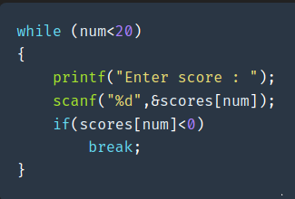
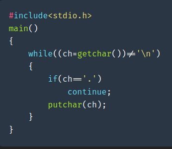
Goto and labels
C provides the infinitely-abusable goto statement, and labels to branch to.
Formally, the goto statement is never necessary, and in practice it is almost always easy
to write code without it. We have not used goto in this book.
Nevertheless, there are a few situations where gotos may find a place.
The most common is to abandon processing in some deeply nested structure,
such as breaking out of two or more loops at once. The break statement cannot be used
directly since it only exits from the innermost loop. Thus:
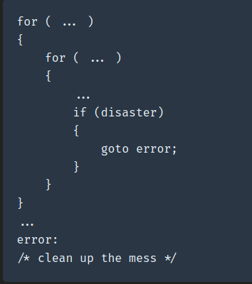
Arrays
Arrays are structures that hold multiple variables of the same data type.
The first element in the array is numbered 0, so the last element is 1 less
than the size of the array. An array is also known as a subscripted variable.
Before using an array its type and dimension must be declared.
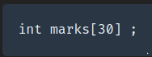
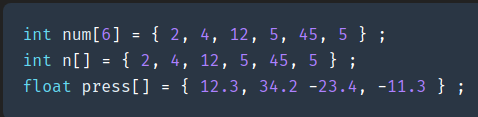
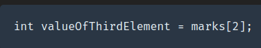
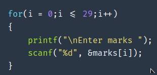
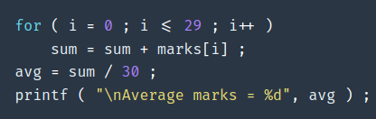

Strings
Strings are arrays of characters. Each member of array contains one of characters in the string.
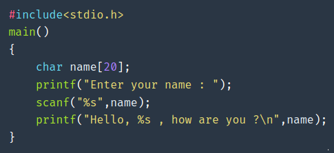
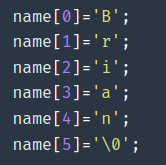
Standard Library String Functions
With every C compiler a large set of useful string handling library functions
are provided in <code>string.h</code> file.
strlen - Finds length of a stringstrlwr - Converts a string to lowercasestrupr - Converts a string to uppercasestrcat - Appends one string at the end of anotherstrncat - Appends first n characters of a string at the end of
anotherstrcpy - Copies a string into anotherstrncpy - Copies first n characters of one string into anotherstrcmp - Compares two stringsstrncmp - Compares first n characters of two stringsstrcmpi - Compares two strings without regard to case ("i" denotes
that this function ignores case)stricmp - Compares two strings without regard to case (identical to
strcmpi)strnicmp - Compares first n characters of two strings without regard
to casestrdup - Duplicates a stringstrchr - Finds first occurrence ofa given character in a stringstrrchr - Finds last occurrence ofa given character in a stringstrstr - Finds first occurrence of a given string in another stringstrset - Sets all characters ofstring to a given characterstrnset - Sets first n characters ofa string to a given characterstrrev - Reverses string
Functions
A function is combined of a block of code that can be called or used anywhere in
the program by calling the name. Body of a function starts with { and ends with }.
This is similar to the main function. Example below shows how we can write a simple
function.
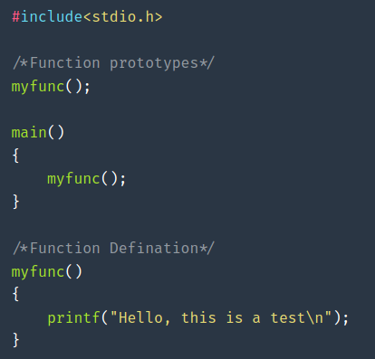
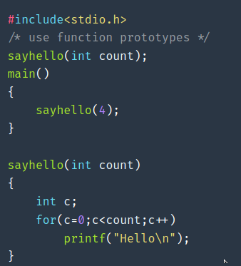
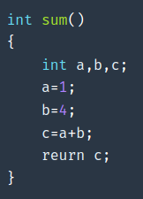
In our previous examples we did not return any value in our functions.
For example you must return a value in main() function.
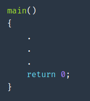
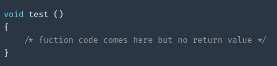
Recursive Function
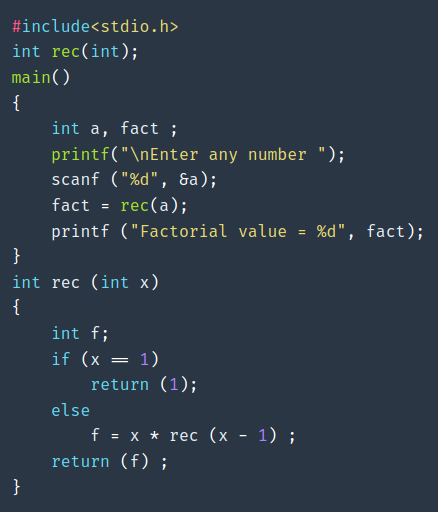
Multiple Parameters
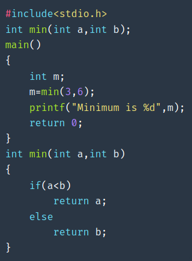
Call by value
C programming language function calls, use call by value method.
Let's see an example to understand this subject better.
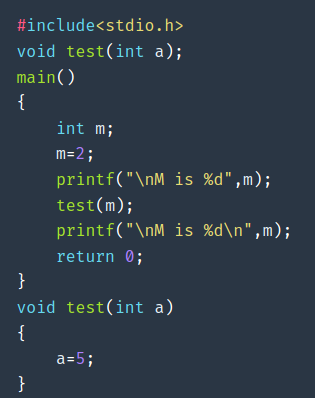
Call by Reference
There is another method of sending variables being called "Call by reference".
This second method enables function to modify value of argument variables used
in function call.
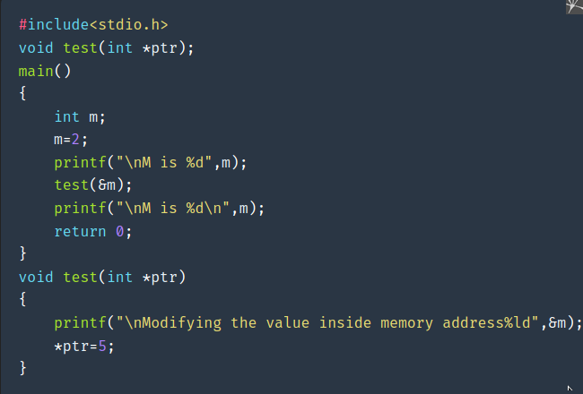
Pointers
A pointer is a variable that contains the address of a variable. The main thing
is that once you can talk about the address of a variable, you'll then be able
to goto that address and retrieve the data stored in it.
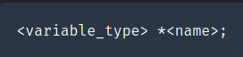
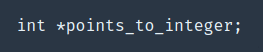
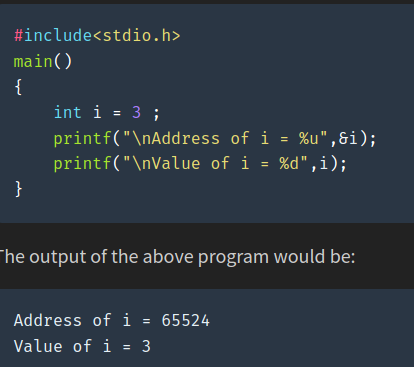
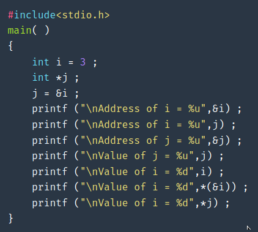
Structures
A structure is a collection of one or more variables, possibly of different types,
grouped together under a single name for convenient handling.
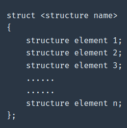
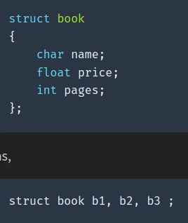
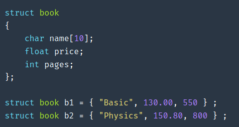
Accessing Structure Elements
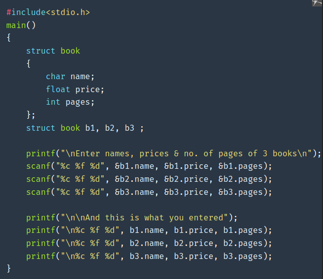
Files
File Pointers
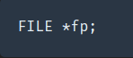
Opening a file
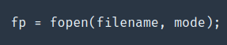
The filename and mode are both strings.
The mode can be
r - read
w - write, overwrite file if it ex ists
a - write, but append instead of overwrite
r+ - read & write, do not destroy file if it exists
w+ - read & write, but overwrite file if it exists
a+ - read & write, but append instead of overwrite
b - may be appended to any of the above to force the file to be opened in
binary mode rather than text mode
fp = fopen("data.dat","a"); - will open the disk file data.dat for writing,
and any information written will be appended to the file.
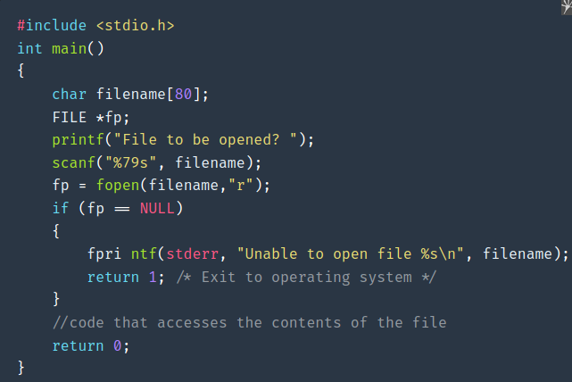
Command Line Arguments
The arguments that we pass on to main() at the command prompt are called
command line arguments.
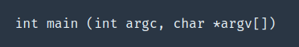
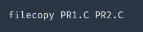